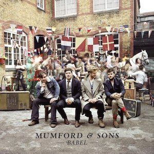
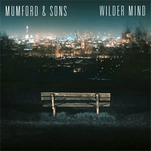
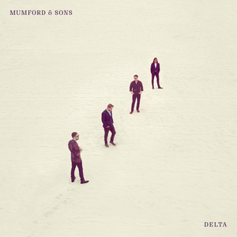
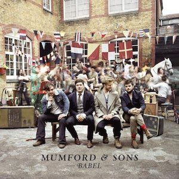
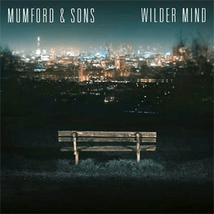
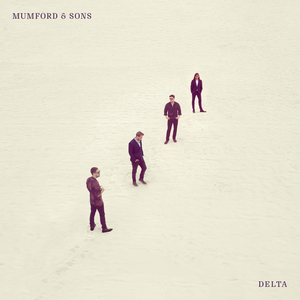

Mumford and Sons are an English folk rock band who formed in 2007. The band consists of 4 members: Marcus Mumford (lead singer), Ben Lovett (vocals and pianist), Winston Marshall (vocals, banjo, electric guitar), and Ted Dwane (vocals, bass guitar, double bass). Occasionally, the band will add musicians to join them on the road when they tour or record, however those four are the core of the group. Mumford and Sons play in all locations, large to small, headliner to supporting act, all in effort to share their music. Currently, the band has four successful studio albums, not including additional live albums and collaborative albums. They have won a multitude of awards like Billboard Music Awards for 'Top Rock Album' and the Grammys for 'Album of the Year' for their Babel album in 2013.
In a world that is ever-changing, Mumford has changed too. Over the years, they have transformed their sound, constantly finding new limits and new rythms. They have added people to their band when they want to, in order to show people the way music can be redone, re-made, re-listened to only by adding an instrument. From the examples below, it begins with their first album "Sigh No More." This album exemplifies their folk roots with a purely instrumental background. However, once the album hits to "Wilder Mind" the typical banjo is switched out for an electric guitar and there is an incorporation of more computer-engineered sounds. Mumford and Sons explained in various interviews their purpose is to make music people would enjoy and also should hear. Although their sound mostly aligns with folk, they attempt to break the mold of being placed in one musical category when each genre is always a conglomerate of many sounds.
With 'literary influence' based lyrics combined with their natural sound, Mumford has made an impact in the folk industry in the U.S. by shedding a powerful light to the beauty of folk music. As one of the most accomplished and well-known folk bands in world, Mumford and Sons continue to create feel-good and honest content.
 




